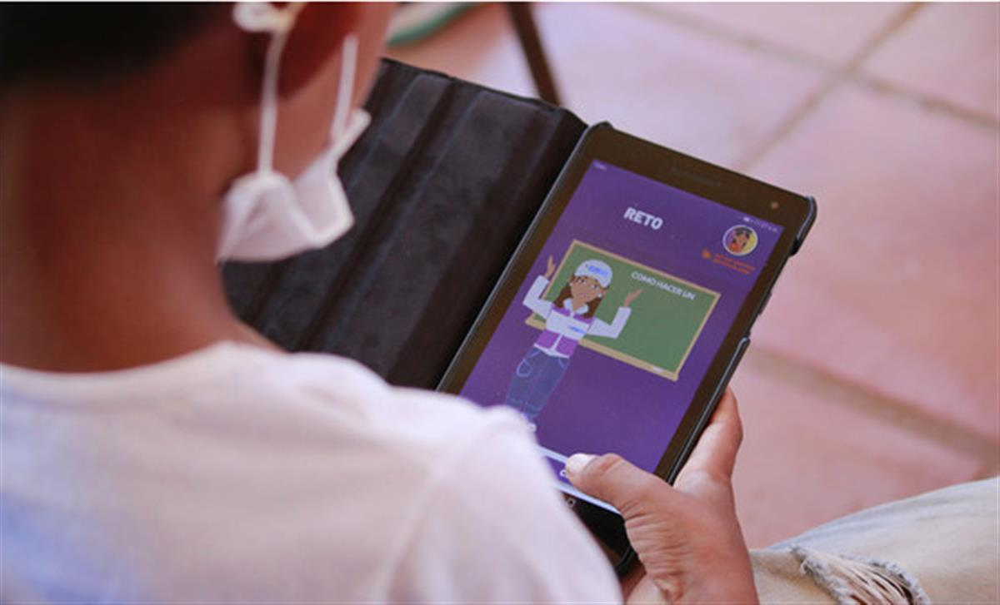
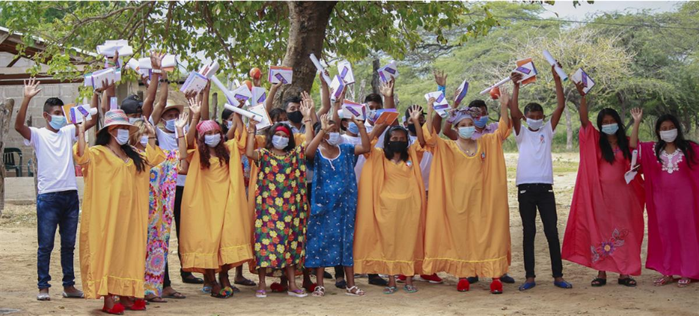

El Origen Foundation - A teacher explains how to use the application that will allow students to access educational material.
First Person: The Colombian youth fighting for digital education for all
20 February 2021
Tania Rosas, a Colombian education advocate from an afro-indigenous background, is hoping to improve learning outcomes for disadvantaged communities in her country, with a digital application tailored to their specific needs.
Ms. Rosas, a UN Young Leader, is the founder of El Origen, a foundation that provides at-risk youth with a second chance at education. O-lab, the app developed by El Origen, is adapted for indigenous students, who have some of the world’s lowest education attainment levels.
In an interview with UN News, Ms. Rosas expressed her firm belief that inclusive digital education is the solution to bridging many of the world’s economic, social and educational gaps.

Tania Rosas, a Colombian education advocate, has developed the O-lab app.
“It is not enough to give the internet to everyone, you have to create specific tools that are customizable, and their impact must be measurable. We must think in terms of communities when we create technology, and not simply build generic tools, with a community aspect bolted on later.
I was born in La Guajira in 1991, the year in which indigenous people such as the Wayúu, who live in the region, a peninsula shared by Venezuela and Colombia, were officially recognized as Colombian citizens for the first time. Before that, as non-citizens they were only allowed to attend Catholic schools, and were barred from state-run schools. However, La Guajira is still the region with the largest indigenous population in Colombia and also the one with the highest rates of school dropout and illiteracy.
My interest in finding customized solutions to the educational crisis is the result of observing the many shortcomings in this area, such as the marginalization of children and young people from the most vulnerable communities.
A family of educators
The project is the result of my life and experiences. I come from a family of educators. My grandmother, who was of African descent, had a school in her house, to help indigenous and non-indigenous children who had trouble adjusting to the regular school system. Since I was little, I have been very interested in finding solutions to problems with the education system.

A student uses the O-lab application in Colombia. El Origen FoundationComing from a family which is descended from Africans, I had more opportunities than indigenous people. During my time at school, I remember that the indigenous people wanted a new, inclusive form of education. When I was in fifth grade, a lot of kids from different communities were just entering. They were the same age as me but they were starting school for the first time, so they weren’t able to adapt to the system, and usually dropped out. Today, this is still happening.
I also have indigenous members of my family, who were forced to renounce their culture. For example, my paternal grandmother does not speak her indigenous language because at school they told her that it was a devil's language.
La Guajira and El Origen
This is why, when I finished university, I wanted to return to La Guajira and try to give many more young people a second chance. This is how the El Origen project was born: our mission is to ensure that any child or young person in a vulnerable community can access digital education, without any barriers. We’ve been going for five years now, we have helped some 2,500 children and the number is increasing day by day.

El Origen Foundation - Indigenous students from the El Origen Foundation in La Guajira, Colombia.The O-lab app allows children and young people from rural or marginalized communities to gain access to a range of educational materials that are appropriate for their age, and approved by local schools or educational institutions close to them. The key advantage of this app, is that it works with or without an internet connection. and that it meets the particular needs of each student.
Pupils can take part in the courses that their classroom teacher gives them access to. To learn how to use the application there is a tutorial in Spanish, in English and another in the Wayuunaiki language, the most widely spoken indigenous language in Colombia. We want to translate it into other indigenous languages as well.
Providing the tools for success
It has long been evident that many children in urban areas are able to access electronic devices, whilst children from rural areas are being left behind. It is important to distribute equipment more widely.
El Origen is working with the Ministry of Education and international organizations, to donate tablets to community schools, which they, in turn, distribute to their students.
We have also seen that many students, especially in high school, already have cell phones. Our app is designed to work on these devices, even very cheap ones. We want them to see their phones not only as a way to access social media, but also a way to get education and better opportunities once they leave school.
Although we have mainly focused on working with indigenous children, and youth between the ages of 6 and 18, the system has proven useful for other vulnerable groups. For example, those teaching Venezuelan migrant students have created a course adapted to their needs, which is helping them to progress through the academic system.
There is a huge world of information online, but we want students to be able to access knowledge that is useful and convenient for them to use. Rather than being confused and overwhelmed, we want them to see digitization and technology as an ally for the sustainable development of their communities”.
SOURCE: UN NEWS